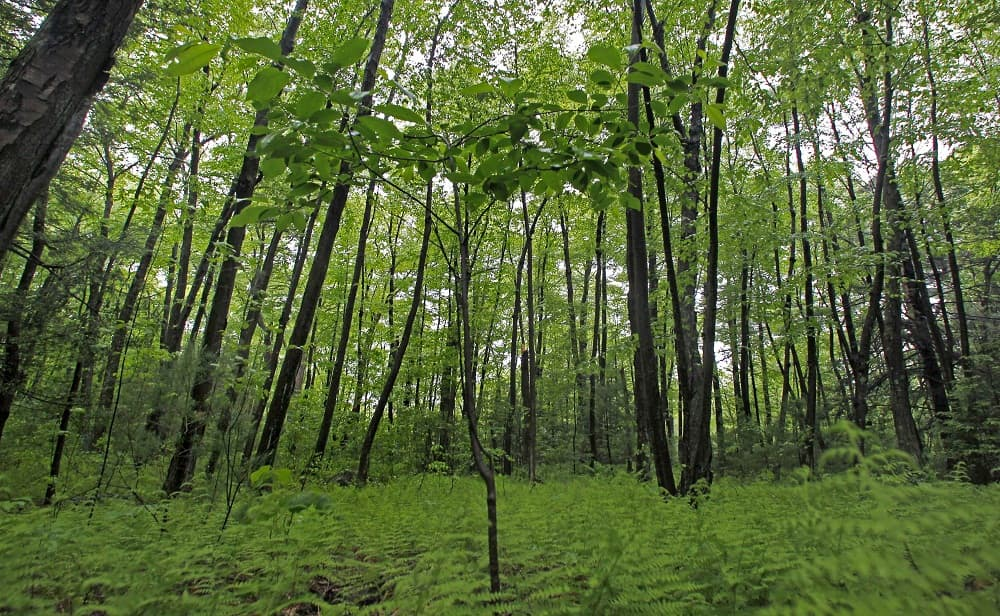

Forests, Deserts, Policies and Climate
Photo Source: Creator-Charles Krupa | Credit - AP | Copyright - AP2010
Forests are important resources of the earth providing livelihoods to multiple occupations, such as farmers, woodcutters, fishermen, and hunters. Moreover, forests create considerable positive externalities for more populations, including providing better environments, guaranteeing cleaner air, fencing off sand storms, and in the long run, absorbing more the carbons in the atmosphere and help to reduce the cost of climate change. As a result, forest conservation and forestation policies have been important decisions for governments all around the world, especially when forests may be more threatened under the perspective of climate change.
I join Harvard Salata Institute's Nature-based Solution (NbS) for Climate project in studying how actions of protecting, improving management and restoration of forests contribute to climate mitigation. We also explore the efficiency of market-based solutions, such as carbon-offset tradings.
Under UChicago's EPIC-China, I also participate in the project about Chinese desertification. The project would study the impacts of desertification and forest policies in China, particularly the large-scaled Three North afforestation implemented in the developing country for decades.